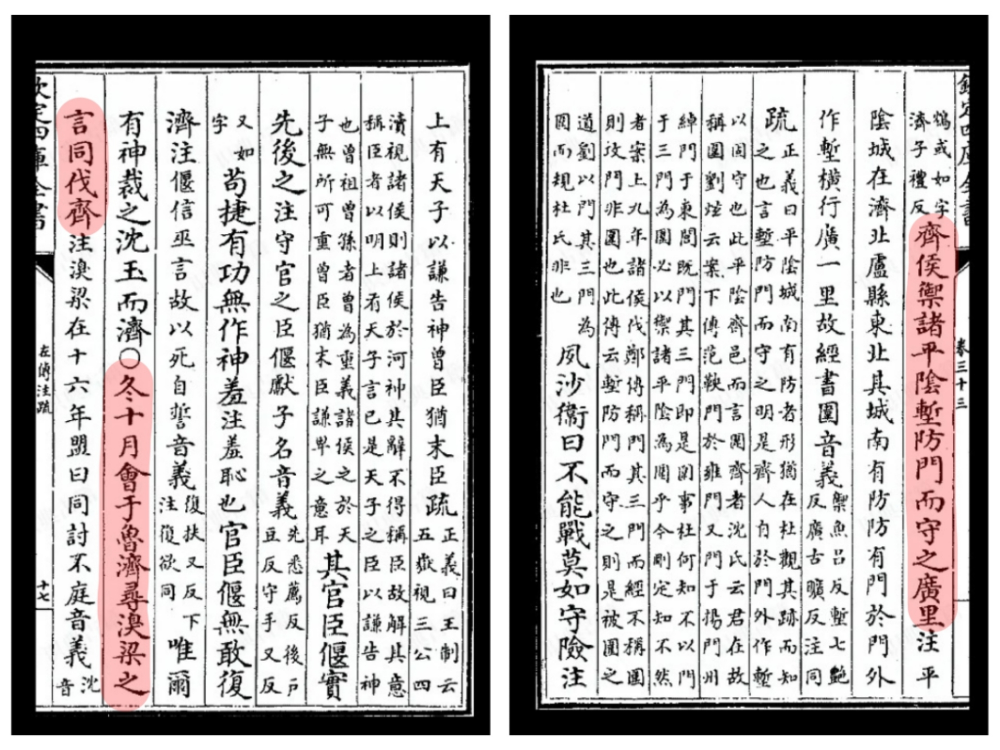
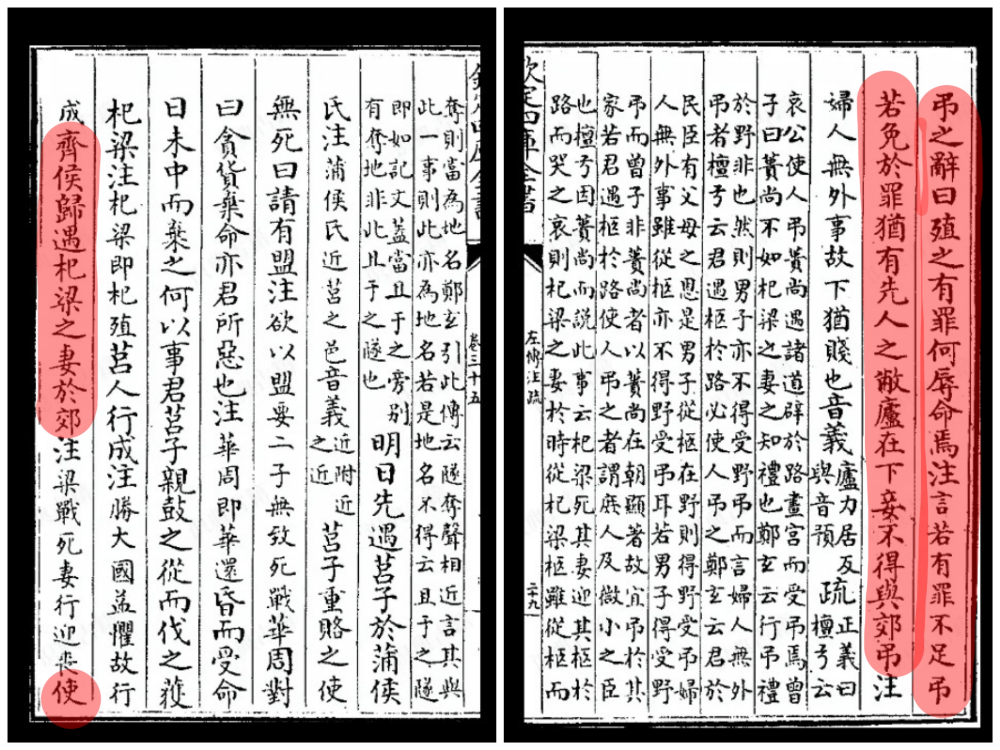
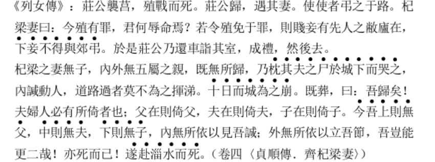
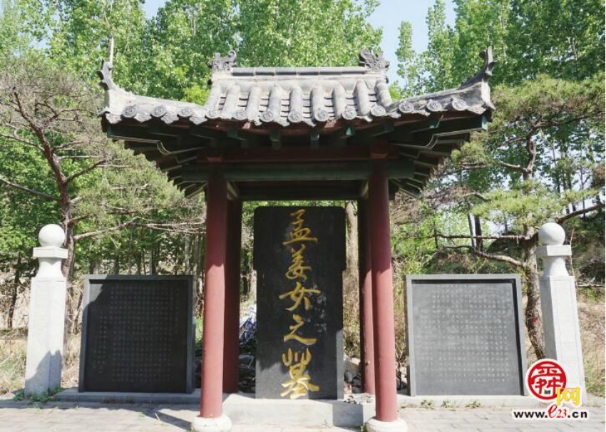
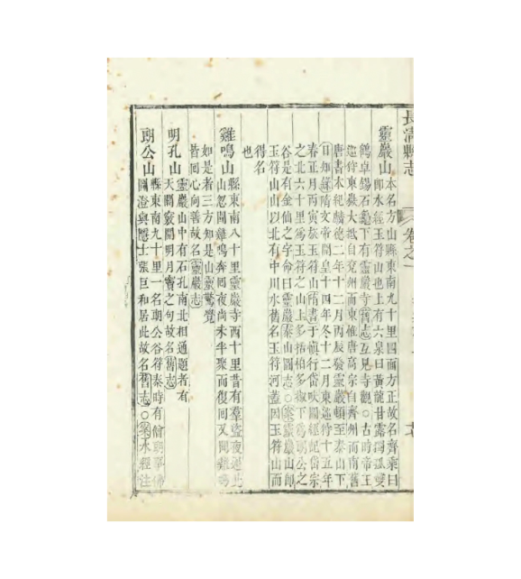
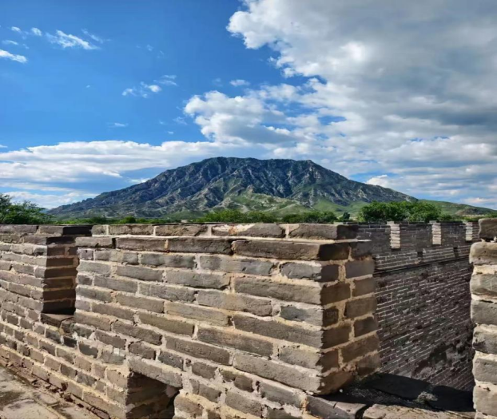

齐长城历史底蕴深厚
齐长城始建于春秋、建成于战国，是世界现存最古老的长城，全国重点文物保护单位，也是长城国家文化公园的核心遗存。它绵延千里、夯土筑城、因山为险，串联关隘、烽燧、寨堡与古驿道，构成中国早期完整的军事防御体系。在千百年流传中，沿线村落留下大量鲜活的口述记忆，让齐长城成为有故事、有情感、有灵性的活态文化载体。 春秋时期的平阴之战，以齐长城为核心防线展开，诸侯列阵、据关而守，是齐长城最早、最重要的战争见证，沿线至今留存战地布局、行军驻守的口述细节；家喻户晓的孟姜女哭长城，其文化原型正发源于齐长城，女子寻夫、恸倒长城的叙事，承载着戍边离愁与人间真情，极具情感穿透力；沿线鸡鸣山“金鸡报晓、预警敌情、庇佑军民” 的传说，更赋予长城灵动画像与民间信仰色彩。 这些史实与传说自然交融、代代相传，构成辨识度极高的文化母题，为本项目文创盲盒开发提供了真实、厚重、不可复制的内容源泉。
（1）平阴之战
春秋中期，诸侯争霸日趋激烈，齐长城西段成为齐鲁争霸的关键战略屏障。《左传・襄公十八年》（公元前 555 年） 明确记载：“冬十月，会于鲁济…… 齐侯御诸平阴，堑防门而守之，广里。” 这一年，晋、鲁、宋、卫等多国诸侯联军大举伐齐，齐灵公亲临平阴，依托齐长城 “防门” 一线深挖壕沟、凭险固守，以长城墙体为屏障、以隘口为要塞、以壕沟为防线，形成纵深防御部署，这是中国历史上第一次以长城为核心防御工事的大规模战役。 战场之上，联军强攻受阻，便在山泽险要之处遍插旌旗、虚设兵幕，制造 “遍地是兵” 的假象迷惑齐军；齐军夜遁，联军趁势追击，长城沿线多处隘口、烽燧、营垒均卷入战事。此战不仅奠定了齐长城作为军事屏障的历史地位，更在沿线村落留下大量战地口述：关隘如何布防、将士如何驻守、烽烟如何传信、军队如何夜遁等细节代代相传。战场格局清晰、人物明确、情节完整，为文创盲盒提供了真实可感的战争场景、兵器形制、关隘造型、将士形象等丰富创作原型。

《左传・襄公十八年》
（2）孟姜女哭长城 家喻户晓的孟姜女哭长城故事，并非起源于秦长城，其真实历史原型与文化根脉完全源自齐长城，且有清晰文献脉络可完整追溯。 最早记载见于《左传・襄公二十三年》（公元前 550 年）：齐将杞梁率军伐莒战死，齐庄公欲在郊外吊唁，杞梁之妻以 “礼不合制” 坚辞，坚持在家中依礼完成祭奠，体现守礼刚烈之节。至战国，《礼记・檀弓》引曾子之言：“其妻迎灵柩于路而哭之哀”，首次加入 “哭于路” 的情节；《孟子》 进一步记载：“杞梁之妻善哭其夫而变国俗”，说明她的悲哭已成为齐地流传的风俗意象。 从 “守礼拒祭” 到 “路哭成俗”，再到汉代以后演绎为 “哭倒城墙”“投水殉夫”，整个故事完整发源于齐长城沿线，聚焦戍边征战、生离死别、思念至深的情感内核，承载着古代百姓对和平的向往、对亲人的牵挂、对正义的共情。这一传说国民认知度极高、情感穿透力极强，是齐长城最具辨识度、最易引发共鸣的文化符号，可直接转化为盲盒的人物形象、剧情故事、情感主题。

《左传・襄公二十三年》

《列女传・齐杞梁妻》

济南市莱芜区黄石关前孟姜女坟
孟姜女的故事
（3）金鸡报晓鸡鸣山 齐长城沿线山险隘多，关口值守、敌情预警是戍边核心功能，由此诞生了大量守护类民间传说，鸡鸣山金鸡报晓便是其中流传最广、记载最明确的代表性故事。 齐长城长清、肥城段有一山，山势昂首如雄鸡，扼守长城要道，自古称鸡鸣山。清代《长清县志》《肥城县志》均记载其传说：古时此处关口常有盗寇袭扰，百姓与守关士卒不得安宁。一夜盗贼集结欲破关抢掠，行至山下，忽闻山巅雄鸡高唱；盗贼惊疑天色将亮，仓皇退走。数次欲犯，皆闻鸡鸣惊退，终不敢再来。乡民以为神鸡护境、预警安民，遂世代传颂。 金鸡报晓、震慑奸邪、护境安民的叙事，兼具军事防御、祥瑞寓意、民间信仰三重内涵，形象鲜明、寓意正向、老少皆宜，既契合长城 “守护” 主题，又适合转化为盲盒中的祥瑞款、隐藏款、祈福款形象，传播度与接受度极高。

清代道光《长清县志》鸡鸣山原文

鸡鸣山